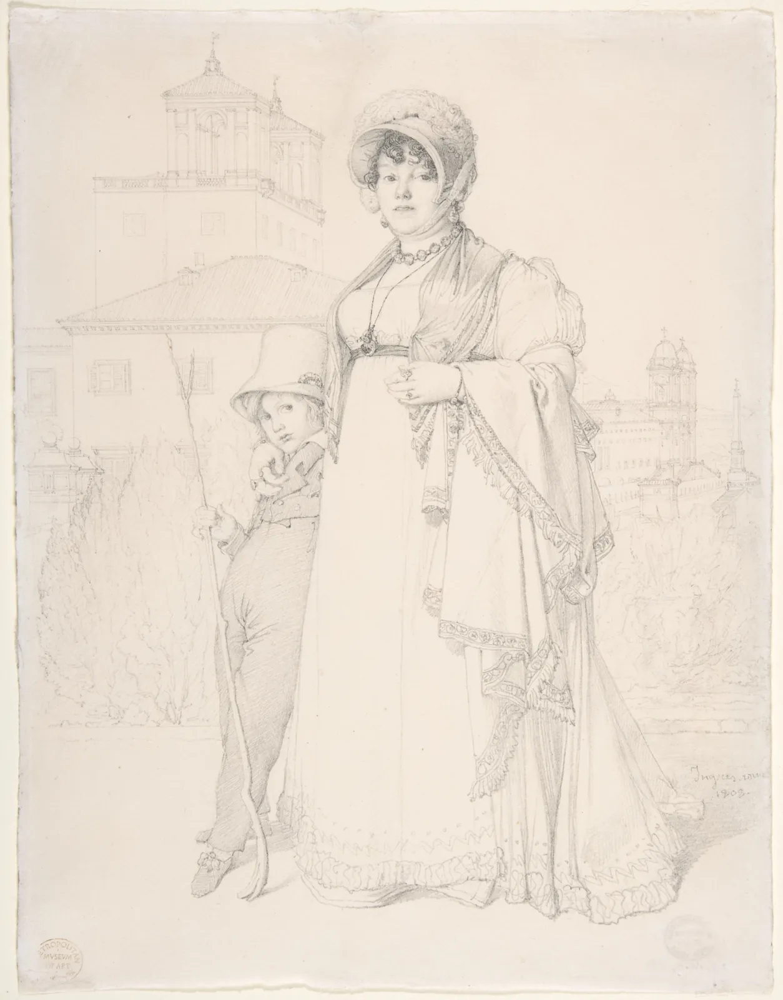
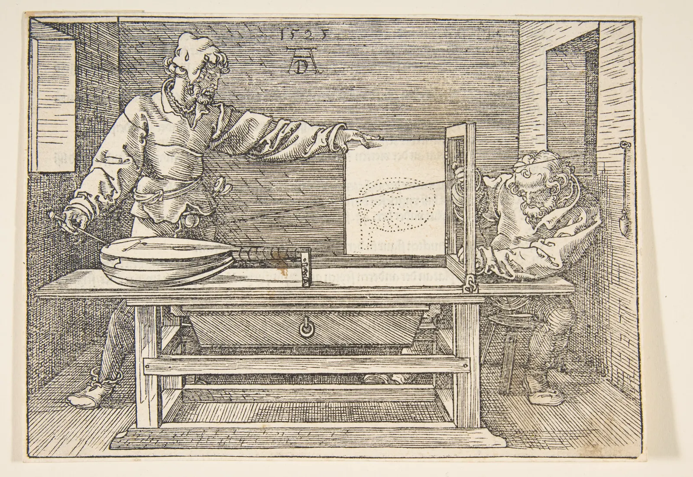

"보이는 대로 그리면 된다"는 말은 쉽다. 그런데 막상 컵을 앞에 두고 그리면 입구는 실제보다 동그랗고, 손잡이는 실제보다 크고, 컵은 화분보다 커져 있다. 눈이 틀린 것이 아니다. 눈이 본 것을 머리가 "컵이란 이런 것"이라는 앎으로 고쳐 쓴 것이다. 이 장은 그 고쳐 쓰기를 멈추는 기술들, 곧 윤곽을 천천히 따라가기, 물건 대신 그 사이의 빈 곳을 보기, 팔을 뻗어 연필로 재기, 각도를 맞추기를 하나씩 익힌다.
사람이 아는 모양(기호)을 그리는 경향과, 그것이 그림을 어떻게 비트는지 설명한다.
거꾸로 보기와 윤곽선 드로잉이 왜 기호를 끄는 데 도움이 되는지 직접 해 본다.
물건 사이의 빈 곳(음형)을 보면 모양의 오차가 더 잘 드러나는 이유를 안다.
팔을 뻗어 연필로 비례를 재는 원리(닮은 삼각형)와, 측정이 틀어지는 흔한 이유를 안다.
기준 단위 하나로 여러 물건의 비례를 적고, 기울어진 선의 각도를 연필로 맞춘다.
아는 것을 그리는 손
1장에서 아이가 그리는 탁자와 컵을 보았다. 탁자 윗면은 직사각형, 컵의 입구는 원이었다. 어른의 그림도 크게 다르지 않다. 눈을 그리라고 하면 레몬 모양 테두리 안에 동그라미를, 나무를 그리라고 하면 갈색 기둥 위에 초록 구름을 그린다. 이렇게 머릿속에 저장된, 물건을 대표하는 단순한 모양이 기호(Symbol, schema)다. 기호는 빠르고 알아보기 쉽다. 문제는 눈앞의 물건을 보고 그릴 때도 손이 기호 쪽으로 끌려간다는 것이다.
아래 비교 그림의 왼쪽은 창가의 화분과 컵을 기호로 그린 것이고, 오른쪽은 같은 화분과 컵을 탁자 앞에 앉은 눈으로 본 모양이다. 경계선을 끌어 비교하고, 슬라이더로 눈높이를 바꾼다.
SIMULATOR
기호로 그린 정물, 보고 그린 정물
컵 입구 세로 ÷ 가로—
화분 입구 세로 ÷ 가로—
기호의 입구1.00 (원)
해볼 것: ① 기본값은 탁자 앞 의자에 앉아 80 cm 떨어진 정물을 보는 눈(탁자 위 38 cm)이다. 컵 입구는 가로의 3분의 1 남짓한 납작한 타원인데, 기호는 원이다. ② "기호의 입구를 겹쳐 보기"를 켠다. 기호로 그린 원은 보이는 타원보다 세 배쯤 높다. 처음 그린 정물에서 컵이 실제보다 커 보이는 흔한 이유다. ③ 눈높이를 90 cm까지 올려 내려다보고, 4 cm까지 내려 탁자에 눈을 붙여 본다. 입구 모양은 계속 바뀌지만 기호는 바뀌지 않는다. 기호는 "어디서 보든 같은 모양"이라서 어느 자리의 그림도 아니다. 아래로 내려가면 컵 입구가 거의 한 줄이 되고, 화분은 입구의 밑면이 보이기 시작한다. (핀홀 투영 모형. 화분은 바닥 지름 10 cm·입구 13 cm·높이 14 cm, 컵은 지름 8 cm·높이 9 cm로 두었다.)
기호로 그린 그림이 어색한 것은 기호 하나하나가 틀려서가 아니라, 기호가 어떤 자리에서 본 모양도 아니기 때문이다. 원은 컵을 바로 위에서 볼 때의 입구이고, 옆으로 곧게 선 몸통은 컵을 정확히 옆에서 볼 때의 모양이다. 기호는 이 두 자리를 한 그림에 붙여 놓는다. 그래서 그림 속 컵은 위에서도 옆에서도 본 것이 되고, 결국 어디서도 본 것이 아니게 된다.
그림을 배우지 않은 사람이 보고 그린 그림이 왜 틀리는지에 대해서는 실험 연구도 있다. 미국의 심리학자 코언과 베넷(Dale J. Cohen, Susan Bennett)은 1997년 논문 「왜 대부분의 사람은 보이는 것을 그리지 못하는가」(Why can't most people draw what they see?)에서 그리기의 오차를 손의 움직임, 그린 선을 판단하는 능력, 대상을 보는 단계로 나누어 살폈다. 그 결과 오차의 큰 부분이 손재주보다 대상을 지각하는 단계에서 생긴다고 보고했다. 연구가 다룬 그림과 사람의 범위는 제한적이지만, 이 책이 손보다 눈에서 시작하는 이유와 같은 방향의 결과다.
"우뇌로 그리기"의 연습은 쓰고, 설명은 내려놓는다
베티 에드워즈의 『오른쪽 두뇌로 그림 그리기』(Drawing on the Right Side of the Brain, 1979)는 이 장에서 다룰 거꾸로 보고 따라 그리기, 윤곽선 드로잉, 음형 보기를 대중에게 널리 알린 책이다. 책은 이 연습들이 언어와 기호를 담당하는 좌뇌 대신 공간을 담당하는 우뇌로 "전환"하게 해 준다고 설명했다. 연습은 지금도 효과적인 교수법으로 널리 쓰이지만, 이 설명은 뇌 편측화 연구를 지나치게 단순화한 것으로 본다. 언어와 공간 처리에 좌우 반구의 경향 차이가 있기는 하지만, 그림 그리기 같은 복잡한 일은 양쪽 반구의 여러 영역이 함께 맡는다. 연습이 효과가 있는 이유는 "뇌의 반쪽을 바꿔서"라기보다, 익숙한 기호로 대상을 알아보는 습관을 끊고 모양 자체에 주의를 돌리게 해서라고 설명하는 편이 근거에 가깝다.
거꾸로 보기
기호를 끄는 가장 간단한 방법은 대상을 알아보기 어렵게 만드는 것이다. 사진이나 그림을 거꾸로 뒤집어 놓고 따라 그리면, 무엇을 그리는지 금방 알아보지 못하니 손이 기호로 달려가지 못한다. 대신 선의 각도, 길이, 선과 선 사이의 빈 곳 같은 순수한 모양만 남는다. 거꾸로 그린 그림을 다시 바로 세워 보면 바로 놓고 그린 그림보다 비례가 나은 경우가 많다고 여러 교사가 말한다.
얼굴은 특히 기호의 힘이 센 대상이다. 우리는 얼굴을 눈, 코, 입 하나하나보다 그 배치 전체로 알아본다. 거꾸로 놓으면 그 알아보기가 크게 약해진다. 아래 시뮬레이터에서 직접 그린 얼굴을 돌려 본다.
SIMULATOR
거꾸로 놓으면 보이는 것
돌린 각도—
상태—
해볼 것: ① "눈과 입만 뒤집기"를 켠다. 바로 선 얼굴에서는 눈과 입이 뒤집힌 것이 곧바로 이상하게 보인다. ② 그 상태로 180°까지 돌린다. 이상함이 크게 줄어든다. 거꾸로 된 얼굴에서는 눈과 입이 제자리에 있는지는 보이지만 각각이 뒤집혔는지는 잘 느껴지지 않는다. ③ "선만 보기"를 켜고 다시 돌린다. 얼굴을 얼굴로 읽지 않고, 곡선과 그 사이의 빈 곳으로 보는 연습이다. 거꾸로 따라 그릴 때 보아야 할 것이 이것이다. (사진 대신 단순한 선 그림이라서 효과는 사진보다 약하다. 사람마다 느끼는 정도도 다르다.)
①과 ②에서 본 현상은 영국의 심리학자 피터 톰프슨(Peter Thompson)이 1980년 학술지 『퍼셉션』(Perception)에 발표해 대처 착시(Thatcher illusion)라는 이름으로 알려졌다. 당시 영국 총리의 사진에서 눈과 입만 뒤집었는데, 사진 전체를 거꾸로 놓으면 그 기괴함이 잘 느껴지지 않는다. 얼굴을 알아보는 방식이 부분보다 전체의 배치에 크게 기대고, 그 방식이 거꾸로 된 얼굴에서는 잘 작동하지 않는다는 해석이 널리 받아들여진다. 그리는 사람에게 이 현상은 도구가 된다. 알아보기가 약해진 틈에 모양이 보인다.
거꾸로 따라 그리기 15분
선이 분명한 소묘 한 장(이 장의 앵그르 그림을 인쇄하거나, 공공 도메인 소묘 사진)을 거꾸로 뒤집어 책상에 놓는다. 위쪽(원래는 아래쪽)부터 선 하나하나를 옆의 선과 비교하며 따라 그린다. 이 선은 수직에서 얼마나 기울었나, 저 선보다 긴가 짧은가, 두 선 사이의 빈 곳은 어떤 모양인가만 생각한다. 중간에 바로 세워 보지 않는 것이 규칙이다. 다 그린 뒤 둘 다 바로 세워 비교한다. 같은 그림을 바로 놓고 한 번 더 따라 그려 세 장을 나란히 놓으면, 어느 쪽에서 기호가 끼어들었는지 보인다.
윤곽선 드로잉
두 번째 방법은 반대로, 대상을 아주 천천히 그리는 것이다. 윤곽선 드로잉(Contour drawing)은 눈으로 대상의 가장자리를 개미가 기어가듯 천천히 따라가며, 그 속도에 맞춰 연필도 종이 위에서 같이 움직이는 연습이다. 눈과 손이 같은 속도로 움직인다고 상상한다. 그중에서도 종이를 보지 않고 대상만 보며 그리는 것을 블라인드 윤곽선 드로잉(Blind contour drawing)이라고 한다. 미국의 미술 교사 키몬 니콜라이데스(Kimon Nicolaïdes)가 『자연스럽게 그리는 법』(The Natural Way to Draw, 1941)에서 기본 연습으로 소개한 뒤 널리 퍼졌다.
블라인드 윤곽선 드로잉의 결과는 대개 우스꽝스럽게 일그러진다. 그래도 괜찮다. 목적은 닮은 그림이 아니라, 눈이 대상의 가장자리를 끊김 없이 실제로 따라가게 만드는 것이다. 종이를 보지 않으니 "컵은 이런 모양"이라는 기호가 끼어들 틈이 없다. 아래 시뮬레이터 왼쪽의 대상을 보며, 오른쪽 종이에 마우스나 손가락으로 윤곽을 따라 그린다.
SIMULATOR
눈은 대상에, 손은 종이에
오른쪽 종이에 끌어서 그린다
평균 어긋남(대상 크기 대비)—
그린 선 길이 ÷ 대상 둘레—
걸린 시간—
해볼 것: ① 블라인드를 켠 채, 오른쪽 종이를 보지 말고 왼쪽 잎의 가장자리만 보며 천천히 그린다. 손을 떼면 내 선과 대상의 윤곽(점선)이 겹쳐 나타난다. ② 블라인드를 끄고 같은 잎을 그린다. 어긋남은 줄지만, 그리는 동안 눈이 대상보다 종이에 머문 시간이 훨씬 길었을 것이다. ③ 일부러 빨리 그려 본다. 둘레보다 선이 짧아지고(굴곡을 건너뛴다) 모양이 기호처럼 매끈해진다. 걸린 시간은 성적이 아니라 기록이다. 윤곽선 드로잉에서는 느린 쪽이 목적에 가깝다. (어긋남은 그린 선을 대상과 같은 크기·위치로 맞춘 뒤, 각 점에서 대상 윤곽까지의 평균 거리로 계산한 참고값이다. 닮음의 점수가 아니다.)
윤곽선은 실루엣의 바깥 테두리만이 아니다. 면이 꺾이는 곳, 옷의 주름, 잎맥처럼 형태 안쪽에서 방향이 바뀌는 선도 윤곽선이다. 19세기 프랑스 화가 앵그르는 연필 한 자루로 이런 선을 골라내는 데 뛰어났다.

그림 1. 장오귀스트도미니크 앵그르, 「레티에르 부인과 아들 뤼시앵」, 1808. 로마에서 그린 연필 초상이다. 얼굴과 손은 촘촘한 명암으로 공들여 만들었지만, 드레스와 숄은 거의 윤곽선만으로 되어 있다. 그런데도 옷 속의 몸이 보인다. 숄의 가장자리가 팔을 감아 돌며 꺾이는 곳, 드레스 자락이 바닥에서 접히는 곳에서 선이 굵어지고 방향을 바꾸기 때문이다. 오른쪽 위 "흑백" 단추는 이 그림에서는 거의 차이를 만들지 않는다. 처음부터 명도만으로 된 그림이기 때문이다. 배경의 건물들은 더 가늘고 연한 선으로, 사람보다 뒤에 있다는 것을 알려 준다.메트로폴리탄 미술관 소장(H. O. Havemeyer Collection, Bequest of Mrs. H. O. Havemeyer, 1929), 흑연. 공공 도메인(The Met Open Access, CC0). 소장처 작품 페이지 · 크레딧
블라인드 윤곽선 5분: 내 왼손
연필을 쥐지 않은 손(오른손잡이라면 왼손)을 편하게 구부려 눈앞에 둔다. 종이를 보지 않도록 몸을 손 쪽으로 돌려 앉고, 타이머를 5분에 맞춘다. 손가락 한 마디의 주름부터 시작해, 눈이 가장자리를 1 mm씩 따라가는 속도로 연필을 움직인다. 연필을 종이에서 떼지 않는다. 5분 동안 손 하나를 다 그리지 못해도 괜찮다. 다 그린 뒤 처음으로 종이를 본다. 모양은 일그러져 있겠지만, 주름과 마디가 놀랄 만큼 많이 그려져 있다면 눈이 실제로 본 것이다.
음형: 사이를 그린다
의자를 그리면 다리가 자꾸 어색해진다. 다리 네 개가 각자 어떻게 기울었는지, 어디서 바닥에 닿는지 판단하기 어렵기 때문이다. 이럴 때는 의자 대신 의자 다리 사이의 빈 곳을 본다. 물건 자체의 모양을 양형(Positive shape), 물건과 물건 사이, 물건과 화면 가장자리 사이의 빈 곳이 만드는 모양을 음형(Negative shape)이라고 한다. 형과 바탕의 관계는 CompositionBook의 형과 바탕 장에서 구도의 눈으로 다뤘다. 여기서는 정확하게 보기 위한 도구로 쓴다.
음형이 쓸모 있는 이유는 두 가지다. 첫째, 음형에는 이름이 없다. "의자 다리"는 기호가 있지만 "다리와 가로대 사이의 사다리꼴"은 기호가 없으니 있는 그대로 보게 된다. 둘째, 같은 오차라도 음형에서 더 크게 드러난다. 아래 시뮬레이터에서 의자의 오른쪽 앞다리 끝을 조금 옮겨 본다.
SIMULATOR
다리를 볼까, 다리 사이를 볼까
다리 길이의 변화—
다리 사이 음형 넓이의 변화—
다리의 기울기 변화—
해볼 것: ① "양형"에서 오차를 0과 5 사이로 오가며 본다. 다리가 조금 기울 뿐, 다리 길이는 0.5%도 변하지 않아 틀린 줄 알기 어렵다. ② "음형"으로 바꾼다. 같은 오차에서 두 앞다리 사이의 빈 곳은 넓이가 4% 넘게, 다리 길이 변화의 열 배 이상 바뀌고, 직사각형이던 빈 곳이 한쪽으로 벌어진 사다리꼴이 된다. 넓이보다 먼저 눈에 띄는 것은 이 모양의 변화다. ③ 오차를 12까지 민다. 이 정도면 양형에서도 틀린 것이 보이지만, 음형에서는 훨씬 전에 보였다. 그리는 도중에 음형을 한 번씩 확인하면 오차가 작을 때 잡을 수 있다. (오차는 의자 높이에 대한 백분율. 의자는 정면에서 본 단순한 평면 모형이다.)
음형은 길이가 아니라 넓이와 모양으로 오차를 보여 준다. 다리 끝을 의자 높이의 5%만큼 옮기면 다리 길이는 거의 그대로지만, 좁은 다리 사이의 공간에서는 폭이 그만큼 바뀌니 넓이의 변화가 몇 배로 커진다. 가는 물건 사이의 좁은 틈일수록 효과가 크다. 화분의 잎 사이, 팔과 허리 사이, 골목 건물들 사이로 보이는 하늘 조각이 모두 음형이다. 사람을 그릴 때 허리에 짚은 팔과 몸통 사이의 삼각형을 먼저 맞추면 팔의 각도가 저절로 맞는 것도 같은 원리다.
연필로 재기
보이는 모양을 정확히 옮기려면 결국 재야 한다. 그런데 눈앞의 컵에 자를 대 봐야 소용이 없다. 우리가 옮기려는 것은 컵의 실제 길이(9 cm)가 아니라, 이 자리에서 보이는 길이다. 그래서 그림 그리는 사람들은 팔을 쭉 뻗어 연필을 대상 앞에 세우고, 연필 끝을 대상의 위쪽 끝에 맞춘 뒤 엄지손톱을 아래쪽 끝까지 내려 보이는 길이를 잰다. 이것을 연필 측정(Sight measuring) 또는 비교 측정이라고 한다.
그림 2. 연필 측정의 원리. 눈에서 대상의 위·아래 끝으로 가는 두 시선이 만드는 큰 삼각형과, 같은 두 시선이 연필에서 만드는 작은 삼각형은 닮은꼴이다. 그래서 연필 위 길이 \(s\)는 대상의 높이 \(H\)를 거리 \(D\)로 나누고 팔 길이 \(L\)을 곱한 값이 된다.
$$s = L\,\frac{H}{D}$$
\(s\): 연필 위에서 잰 길이, \(L\): 눈에서 연필까지의 거리(뻗은 팔 길이), \(H\): 대상의 실제 크기, \(D\): 눈에서 대상까지의 거리. 같은 거리에 있는 두 물건을 같은 팔 길이로 재면 \(L/D\)가 같아서, 두 측정값의 비는 실제 크기의 비와 같다. 이 비율이 종이로 옮길 값이다.
여기서 중요한 것은 측정값 자체(예: 연필 위 4 cm)가 아니라 비다. 연필 측정은 "컵의 보이는 높이는 화분의 보이는 높이의 몇 배인가"를 알려 준다. 그래서 먼저 기준 단위를 하나 정한다. 화면에 큰 물건 하나, 재기 쉬운 길이 하나를 골라 "1"로 두고, 나머지를 모두 그 몇 배로 잰다. 종이 위의 기준 단위 크기는 마음대로 정해도 비례는 맞는다. 이 식에서 측정이 틀어지는 길도 보인다. 두 번 잴 때 \(L\)이 달라지면 비가 틀어진다. 아래 시뮬레이터에서 화분을 먼저 재고, 컵을 잴 때 팔을 조금 굽혀 본다.
SIMULATOR
팔을 뻗어 재기
화분: 연필 위 길이—
컵: 연필 위 길이—
컵 ÷ 화분(종이에 옮길 비)—
해볼 것: ① 굽힘 0%에서 거리를 60 cm에서 400 cm까지 바꾼다. 연필 위 길이는 크게 변하지만 컵 ÷ 화분은 0.64로 그대로다(실제 높이 9 ÷ 14). 거리가 바뀌어도 비는 지켜진다. ② "컵 재기"로 바꾸고 굽힘을 20%로 올린다. 팔이 짧아진 만큼 컵이 작게 재져서, 비가 0.51로 떨어진다. 종이 위의 컵이 실제보다 20% 작아진다. ③ 굽힘을 35%까지 민다. 이런 오차는 그림이 다 끝날 때까지 아무도 알아채지 못한다. 그래서 연필 측정의 첫 규칙은 "팔을 매번 끝까지 편다"이다. (팔 길이 60 cm, 화분과 컵이 같은 거리에 나란히 있고 정면 눈높이에서 본다고 둔 단순 모형. 위에서 내려다보면 보이는 높이가 실제 높이와 달라진다.)
팔은 끝까지, 눈은 하나, 연필은 화면과 나란히
연필 측정에는 세 가지 습관이 붙어 다닌다. 첫째, 팔꿈치를 완전히 펴서 팔 길이를 매번 같게 한다. 둘째, 한쪽 눈을 감는다. 두 눈으로 보면 가까운 연필이 두 개로 겹쳐 보여 끝을 맞출 수 없다. 셋째, 연필을 얼굴과 나란한 가상의 유리판(화면) 위에 둔다. 연필 끝이 대상 쪽으로 기울면 위쪽이 멀어져 길이가 틀어진다. 의자의 위치도 표시해 둔다. 쉬었다가 다시 앉을 때 눈의 자리가 10 cm만 달라져도 가까운 물건의 비례와 겹침이 바뀐다. 많은 화실에서 바닥에 테이프로 의자 다리 자리를 표시하는 이유다.
사이트 사이즈와 비교 측정
연필 측정을 더 엄격하게 밀고 간 방법이 사이트 사이즈(Sight-size)다. 그림판을 대상 바로 옆에 세우고, 몇 걸음 물러선 정해진 자리에서 보았을 때 그림 속 대상이 실제 대상과 똑같은 크기로 보이도록 그린다. 그리는 사람은 그 자리와 그림판 사이를 오가며, 같은 자리에서 대상과 그림을 번갈아 비교한다. 19세기 유럽의 초상화가와 화실에서 쓰였다고 알려져 있고, 지금도 고전 사실주의를 가르치는 화실에서 기본 방법으로 쓴다.
사이트 사이즈는 연필 위의 비율을 종이에 다시 키워 옮기는 단계가 없으니, 옮기는 과정의 오차가 줄어든다. 대신 그림의 크기가 보는 거리에 묶이고 그리는 자리를 자유롭게 고를 수 없다. 펜 드로잉 책자처럼 작은 종이에 그리는 일에는 대상을 기준 단위의 몇 배로 재서 원하는 크기로 옮기는 비교 측정(Comparative measurement)이 더 편하다. 두 방법 모두 "한 자리에서 본 모양을, 같은 자리에서 확인한다"는 원칙을 따른다.

그림 3. 알브레히트 뒤러, 「류트를 그리는 제도사」, 1525년 새김. 뒤러가 쓴 기하학 교재 『측정 지침』(Underweysung der Messung)에 실린 도판으로 알려져 있다. 벽의 고리가 눈의 자리를 대신한다. 실은 눈에서 류트의 한 점으로 가는 시선이고, 액자 틀은 화면이다. 실이 틀을 지나는 점을 하나씩 종이에 옮기면 그 자리에서 본 류트의 투영이 점선으로 생긴다. 사람의 눈과 손으로 하는 연필 측정을 실과 틀로 기계화한 장치다. 류트처럼 기호로는 결코 그릴 수 없는 복잡한 단축도 이렇게 하면 정확히 나온다. 다만 한 점을 옮기는 데 두 사람이 필요하다.메트로폴리탄 미술관 소장(Gift of Henry Walters, 1917), 목판화. 공공 도메인(The Met Open Access, CC0). 소장처 작품 페이지 · 크레딧
뒤러의 장치가 보여 주는 것은 결국 1장의 투영 그 자체다. 연필 측정, 사이트 사이즈, 뒤러의 틀, 오늘날의 카메라는 모두 같은 원리, 곧 한 점(눈)으로 모이는 시선이 화면을 지나는 자리를 찾는 일이다. 차이는 그 일을 얼마나 손으로, 얼마나 기계로 하느냐에 있다. 손으로 하는 측정의 장점은 재는 동안 대상을 오래 본다는 데 있다. 무엇을 넣고 무엇을 뺄지, 어느 선이 중요한지를 재는 동안 판단하게 된다.
측정은 큰 것부터, 그리고 너무 자주 하지 않는다
관찰 드로잉을 가르치는 교사들은 측정을 "점검"으로 쓰라고 권한다. 먼저 눈으로 큰 덩어리의 위치와 비례를 가볍게 잡고, 그다음에 연필로 두세 군데만 재서 맞는지 확인한다. 가장 큰 길이(전체 높이와 전체 폭)부터 재고, 작은 부분은 이웃한 큰 부분과 비교해 맞춘다. 처음부터 모든 것을 재면 그림이 딱딱해지고, 작은 측정 오차가 쌓여 오히려 전체 비례가 틀어지기도 한다. 눈으로 먼저 판단하고, 측정으로 그 판단을 고치는 순서가 눈을 기른다.
각도 맞추기
길이 다음은 각도다. 탁자 모서리, 계단 난간, 지붕선처럼 기울어진 선은 그 기울기가 조금만 틀려도 공간 전체가 어색해진다. 연필은 각도를 재는 데도 쓴다. 팔을 뻗어 연필을 기울어진 모서리에 겹쳐 맞추고, 그 기울기를 그대로 유지한 채 종이로 가져온다. 연필을 수평이나 수직으로 세워 두고 모서리가 그 기준선과 이루는 각을 보면 더 정확하다. "시계의 2시 방향"처럼 이름을 붙여 기억하는 사람도 있다.
각도는 기호의 힘이 특히 세게 작용하는 곳이다. 탁자의 모서리는 직각이라는 것을 아니까, 비스듬히 보이는 탁자도 모서리를 직각에 가깝게 그리기 쉽다. 그 결과 멀어지는 모서리를 실제로 보이는 것보다 가파르게 그린다. 아래 시뮬레이터에서 연필을 끌어 모서리에 맞춘다.
SIMULATOR
연필을 모서리에 겹치기
연필 끝을 끈다
모서리의 보이는 기울기—
연필의 기울기—
차이 · 시계 방향—
해볼 것: ① 연필 끝을 끌어 탁자의 멀어지는 모서리에 겹친다. 차이가 2° 안으로 들어오면 선이 초록으로 바뀐다. ② "아는 모양에 끌려간 선"을 켠다. 모서리가 직각이라는 앎에 끌려 실제보다 가파르게 그린 선의 예시다. 차이가 15°를 조금 넘을 뿐인데 그 선으로 그린 탁자는 위로 쏟아질 듯 기울어 보인다. ③ 계단 난간과 처마선으로 바꿔 같은 연습을 한다. 처마선처럼 수평에 가까운 선은 기준선이 없으면 기울기를 거의 느끼지 못한다. (모서리의 기울기는 이 장의 정물 장면을 투영해 계산한 값이다. "끌려간 선"은 실제 측정 자료가 아니라, 직각 쪽으로 40%만큼 끌려간 경우를 보여 주는 예시다.)
모양 항상성과 크기 항상성
시선에 비스듬한 원판은 망막에 타원으로 맺히지만 우리는 둥글다고 느낀다(모양 항상성). 멀리 있는 사람은 망막에 작게 맺히지만 우리는 키가 줄었다고 느끼지 않는다(크기 항상성(Size constancy)). 두 능력 모두 물건의 실제 성질을 알아보게 해 주는 지각의 핵심 기능이다. 그리는 사람은 이 기능을 거슬러야 한다. 그래서 측정이 필요하다. 연필로 재 보면 방 건너편 사람의 머리가 손톱만 하다는 것에 놀라고, 눈으로는 "조금 납작한" 타원이 연필로는 폭의 3분의 1밖에 안 된다는 것에 놀란다. 처음 연필 측정을 배운 사람들이 대개 가장 먼저 하는 말이 "이렇게 작아요?"다.
창가 정물을 재며 그리기
이제 지금까지의 도구를 한 장면에 모은다. 창가 탁자 위의 화분과 컵이다. 화분의 보이는 높이를 기준 단위 1로 두고, 나머지를 그 몇 배로 잰다. 도구 단추로 재기, 음형, 단위 격자를 바꿔 가며 본다. "재기"에서는 노란 손잡이 두 개를 끌어 원하는 길이를 단위로 잰다.
SIMULATOR
화분 높이를 1로
재기: 노란 손잡이를 끈다
컵 높이—
컵 폭—
화분 입구 폭—
화분과 컵 사이—
컵 입구 세로 ÷ 가로—
손잡이로 잰 길이—
해볼 것: ① 기본값(탁자 위 38 cm, 80 cm 거리)에서 손잡이 두 개를 컵의 바닥 앞쪽과 입구 위쪽에 맞춘다. 약 0.7 단위가 나온다. 실제 높이의 비(9 ÷ 14 = 0.64)와 다르다. 연필이 재는 것은 실제 크기가 아니라 보이는 크기이기 때문이다. ② "음형"으로 바꾼다. 화분과 컵 사이의 빈 곳이 어떤 모양인지, 그 폭이 단위의 몇 분의 몇인지 본다. 이 틈을 맞추면 두 물건의 간격이 저절로 맞는다. ③ 눈높이를 80 cm로 올리고 거리를 40 cm로 줄인다. 컵 높이와 폭의 비는 거의 그대로인데(0.69 → 0.66, 0.50 → 0.51) 입구 타원은 0.36에서 0.89로 두 배 넘게 둥글어진다. 비례는 거리에 둔하고, 타원은 보는 높이에 민감하다. 그래서 측정을 시작하기 전에 앉는 자리부터 정한다. (1장과 같은 핀홀 투영 모형. 눈은 정물 높이 6 cm 지점을 향한다. 컵은 화분보다 4 cm 앞에 있다.)
③에서 본 것처럼 측정한 비례는 앉는 자리에 따라 조금씩, 타원의 모양은 크게 달라진다. 그래서 측정에서 정하는 것은 "정답 비례"가 아니라 "이 자리에서 본 비례"다. 같은 자리에 다시 앉아야 같은 그림을 이어 그릴 수 있다. 타원이 눈높이에 따라 어떻게 바뀌는지, 왜 컵 입구보다 바닥이 더 둥근지는 6장에서 기하학으로 다룬다. 여기서 중요한 것은 그 차이를 먼저 본다는 것이다.
서윤의 봄 스케치북
CASE 서윤스케치북 · 2장
컵이 화분만 했다
토요일 오후, 서점 2층 창가 탁자에 도경이 테라코타 화분 하나와 서점에서 쓰는 머그컵 하나를 나란히 놓았다. 서윤이 자로 재 보니 화분은 높이 14 cm, 입구 지름 13 cm, 컵은 높이 9 cm, 지름 8 cm였다. 열두 점 중 다섯 번째, "창가의 화분과 컵"의 첫 연습이다. 서윤은 의자에 앉아 연필로 10분 만에 둘을 그렸다. 다 그리고 보니 컵 입구는 거의 동그랬고, 컵이 화분과 비슷한 크기였다.
도경은 서윤의 의자 다리 자리에 테이프를 붙이고 말했다. "먼저 오래 봐라. 그다음에 재." 서윤은 팔을 끝까지 펴고 한쪽 눈을 감은 채 연필로 화분의 보이는 높이를 재서 그것을 1로 정했다. 같은 팔로 재니 컵의 보이는 높이는 0.7, 폭은 0.5, 화분 입구의 폭은 0.8, 화분과 컵 사이의 빈 곳은 3분의 1 남짓이었다. 이 자리(탁자 위 눈높이 약 38 cm, 정물에서 약 80 cm)에서 본 컵의 입구는 세로가 가로의 3분의 1을 조금 넘는 납작한 타원이었다. 처음 그림의 원과 비교하면 세 배 가까이 차이 났다. 위 마지막 시뮬레이터의 기본값이 이 장면이다.
서윤이 "이렇게 작아요?" 하고 웃자 도경은 자기 스케치북을 펼쳐 보였다. 수십 년 된 정물 연습 옆에 숫자가 빼곡했다. "재는 건 눈을 의심하는 연습이야. 다만 숫자는 점검용이지 그림이 아니다." 서윤은 대신 휴대폰으로 같은 자리에서 사진을 찍어 측정값과 비교해 보자고 했고, 도경은 사진이 눈보다 렌즈에 따라 달라진다며 한 장만 찍게 했다. 두 번째 그림은 30분이 걸렸다. 컵은 화분보다 확실히 작아졌고, 입구는 납작해졌다.
이 장에서 정한 것측정 기준 단위는 화분의 보이는 높이(= 1). 이 자리에서 잰 비례: 컵 높이 약 0.7, 컵 폭 약 0.5, 화분 입구 폭 약 0.8, 화분과 컵 사이 약 1/3. 의자 자리를 표시하고, 같은 자리에서만 이어 그린다. 측정은 큰 길이부터, 점검용으로 두세 번만 한다.
아직 남은 문제비례는 맞았는데 연필 선이 모두 같은 굵기와 같은 진하기라 그림이 밋밋하다. 책자는 펜으로 그려 흑백으로 인쇄하는데, 연필의 회색을 펜으로 어떻게 옮기나.
사람은 보고 그릴 때도 머릿속의 기호(어디서 보든 같은 표준 모양) 쪽으로 손이 끌린다. 기호는 어느 한 자리에서 본 모양이 아니라서 그림을 어색하게 만든다.
그리기의 오차는 손보다 대상을 지각하는 단계에서 크게 생긴다는 연구가 있다. "우뇌로 그리기"의 연습은 유용하지만, 뇌의 반쪽을 바꾼다는 설명은 과장이다.
거꾸로 보기와 블라인드 윤곽선 드로잉은 대상을 알아보는 습관을 끊고, 선의 방향·길이·굴곡 자체를 보게 한다.
물건 사이의 빈 곳(음형)에는 기호가 없고, 같은 오차가 넓이와 모양의 큰 변화로 드러난다. 그리는 도중에 음형으로 점검한다.
연필 측정은 닮은 삼각형(\(s = LH/D\))이다. 측정값보다 기준 단위에 대한 비가 중요하며, 팔을 매번 끝까지 펴고 한 눈으로, 같은 자리에서 잰다.
기울어진 선은 연필을 겹쳐 각도를 옮기고, 수평·수직 기준선과 비교한다. 직각이라는 앎은 멀어지는 모서리를 실제보다 가파르게 그리게 한다.
확인 퀴즈
1. 탁자 앞에 앉아 컵을 그렸더니 입구가 거의 동그란 원이 되었다. 가장 알맞은 설명은?
입구가 원이라는 것을 알고 있으니 손이 기호로 끌려간 것이다. 바로 위에서 보지 않는 한 입구는 타원으로 보인다. 뇌가 타원을 "둥근 입구"로 해석하는 경향(모양 항상성)은 있지만, 연필로 재면 납작한 타원이 보이므로 피할 수 없는 일은 아니다.
2. 의자 그림에서 다리 하나의 끝이 조금 어긋났을 때, 양형(다리)보다 음형(다리 사이 빈 곳)을 보면 오차를 더 쉽게 찾는 이유로 가장 알맞은 것은?
같은 이동이 긴 다리에는 아주 작은 길이 변화로, 좁은 틈에는 큰 넓이·모양 변화로 나타난다. 또 "다리와 가로대 사이의 사다리꼴"에는 기호가 없어 있는 그대로 보게 된다. 음형도 원근의 영향을 받으며, 크기나 색과는 상관이 없다.
3. 화분을 팔을 끝까지 펴서 재고, 컵은 팔을 조금 굽힌 채로 쟀다. 종이 위 그림에는 어떤 일이 생기는가?
\(s = LH/D\)에서 비율이 지켜지려면 두 측정의 \(L\)이 같아야 한다. 컵을 잴 때 팔이 짧아지면 컵의 \(s\)만 줄어 컵이 작게 그려진다. 그래서 팔을 매번 끝까지 편다.
4. 사이트 사이즈 방법에 대한 설명으로 가장 알맞은 것은?
사이트 사이즈는 "보이는 크기"를 같게 맞춘다. 실제 크기를 자로 재서 옮기는 것과 다르며(가까운 쪽에 그림판이 있으면 그림이 실제보다 작을 수도 있다), 사진이나 거꾸로 보기와도 다른 방법이다. 보는 자리를 고정하고 같은 자리에서 대상과 그림을 번갈아 비교하는 것이 핵심이다.